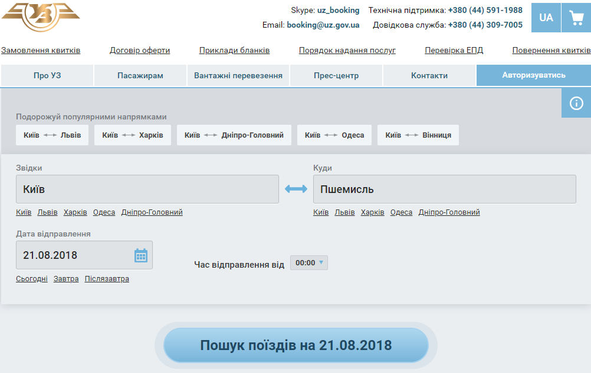

Польща - http://tripadvisor.mfa.gov.ua/?p=617
Режим
в’їзду:
Безвізовий (до 90 днів
протягом 180 днів) – для
власників біометричних паспортів громадянина
України для виїзду за кордон.
При
наявності візи – для
власників паспортів громадянина України
для виїзду за кордон (крім дипломатичних,
службових паспортів України).
На
території України візи на в’їзд до РП
видають Консульський відділ Республіки
Польща в України, Генеральні консульства
РП в Вінниці, Луцьку, Одесі, Харкові.
Митні правила: Під
час перетину кордону, подорожуючий
обов’язково має в письмовій формі
зголосити наявність золота, платини,
незалежно від їх кількості, а також
грошових коштів, якщо їхня сума перевищує
10000 євро.
Повітряним
транспортом особам старшим 17 років
дозволено переміщувати 200 шт. цигарок,
50 шт. сигар, 250 гр тютюну для паління.
Наземним транспортом особа старша 17 років може переміщувати 40 шт. цигарок, 10 шт. сигар, 50 гр тютюну для паління. Алкоголь міцністю не менше 22% але не більше 80% – 1 л, напої до 22% (н-д, лікер) – 12л, вино – 4 л, пиво – 16 л. Продукти, лікарські препарати підлягають санітарному та фітосанітарному контролю.
Можна провозити - ноутбук, смартфон, фотоапарат, а також планшет. Перерахована техніка не підлягає декларуванню, якщо вона призначена для особистого використання.
Забороняється ввозити / вивозити:
Радіоактивні і вибухові матеріали.
Отруйні речовини.
Наркотики.
Предмети, які порушують суспільну безпеку, а також товари, які можуть завдати шкоди здоров’ю людей, тварин і рослин (все вищеперелічене ввозити і вивозити можна тільки після отримання відповідного дозволу.
Предмети, які були зроблені до 9 травня 1945 року (на їх вивезення необхідно спеціальний дозвіл).
Залізничне сполучення
Зовсім недавно стало можливим дістатися до сусідньої Польші за допомогою залізничного транспорту. Є декілька варіантів:
|
Напрям руху потягів |
Дні тижня |
Зупинки |
Час в дорозі, години |
Орієнтована ціна, грн |
Де купити |
|
Київ – Перемишль (Пшемисль) |
щоденно |
Коростень, Підзамче, Львів |
7:37 |
705,03 – 1 клас 489,77 – 2 клас
|
Онлайн Каси |
|
Київ - Перемишль |
щоденно |
Вінниця, Хмельницький, Тернопіль, Львів |
9:13 |
767,42 – 1 клас 536,57 – 2 клас
|
Онлайн Каси |
|
Здолбунів -Холм |
Щоденно |
Рівне, Ківернвці, Ковель |
4:41 |
354 |
Онлайн Каси |
|
Ковель - Холм |
щоденно |
- |
4:00 |
212 |
Онлайн Каси |
|
Львів - Гдиня |
щоденно |
Перемишль, Ряшів, Краків, Варшава, Гданськ |
11:56 |
1728,25 |
Онлайн Каси |
|
Львів - Вроцлав |
щоденно |
Перемишль, Ряшів, Краків, Вроцлав |
12:00 |
1634,66 |
Онлайн Каси |
|
Київ - Варшава |
щоденно |
Хелм, Люблін |
16:48 |
1350,78 |
Онлайн Каси |
|
Одеса - Перемишль |
щоденно |
Жмеринка, Хмельницький, Тернопіль, Львів |
16:19 |
1162 |
Онлайн Каси |
Придбати квитки на потяг можна у касах залізничних вокзалів міст відправлення або онлайн на сайті Укрзалізниці - https://www.uz.gov.ua/

На швидкісний потяг Intercity квитки можна придбати на сайті https://www.intercity.pl/ru/
Автобусне сполучення
Автобуси в Польщу відправляються не тільки з Києва, а й з багатьох інших міст України. Не менш популярним місцем відправлення можна назвати Львів, а також міста України: Луцьк, Вінниця, Івано-Франківськ, Ужгород, Чернівці, Одеса та інші.
Є декілька маршрутів з України
рейси через Київ, наступні до Львова, а потім до Польщі;
автобуси через Київ, що прямують по північній Україні в Ковель або Луцьк, а потім до Польщі;
з Херсона і Одеси до Польщі через Умань, Вінницю, Хмельницький та Тернопіль із заїздом до Львова.
Автобуси до Польщі з Києва відправляються як з Центрального автовокзалу, так і автостанції біля ж/д вокзалу, а також місцем відправлення може служити автостанція Дачна, на виїзді з міста. Ціна квитків різна, і залежить в першу чергу від перевізника.
Напрямки рейсів в Польщу з Києва і вартість:
автобус Київ - Варшава - від 420 грн.
автобус Київ - Краків - від 598 грн.
автобус Київ - Вроцлав - від 750 грн.
автобус Київ - Познань - від 840 грн.
автобус Київ - Люблін - від 357 грн.
автобус Київ - Катовіце - від 650 грн. (Альтернатива - авіапереліт з лоукостом в Катовіце).
автобус Київ - Гданськ - з пересадкою у Варшаві (від 420 грн до Варшави і від 1 євро в Гданськ з місцевої автобусної компанією Польскібас).
Автобуси зі Львова до Польщі дивують розмаїттям, що пов'язано з близькістю Західного транспортного вузла до кордону Україна - Польща. Незважаючи на те, що піший перехід через кордон і неліцензовані маршрутки користуються популярністю, з кожним роком попит зростає і на рейсові автобуси зі Львова до Польщі. Багатьом потрібна віза, а дешевий квиток на автобус - ідеальне рішення для таких випадків, тим більше, що в разі скасування поїздки, частково можна повернути вартість.
Ціна квитків зі Львова:
автобус Львів - Варшава - від 357 грн.
автобус Львів - Краків - від 315 грн.
автобус Львів - Жешув - від 210 грн.
автобус Львів - Вроцлав - від 567 грн.
автобус Львів - Познань - від 747 грн.
автобус Львів - Гданськ - від 723 грн.
автобус Львів - Люблін - від 245 грн.
автобус Львів - Катовіце - від 461 грн.
автобус Львів - Перемишль - від 157 грн.
Є багато компаній, які пропонують автобусні перевезення між містами України та Польші, найпопулярніші – Лідертранс, Ecolines.
Придбати квитки можна в офісах перевізників та в режимі онлайн:
На сайті компанії Ecolines – https://ecolines.net/ua/uk
За допомогою додатку https://infobus.eu/ua
За допомогою додатку https://busfor.ua/